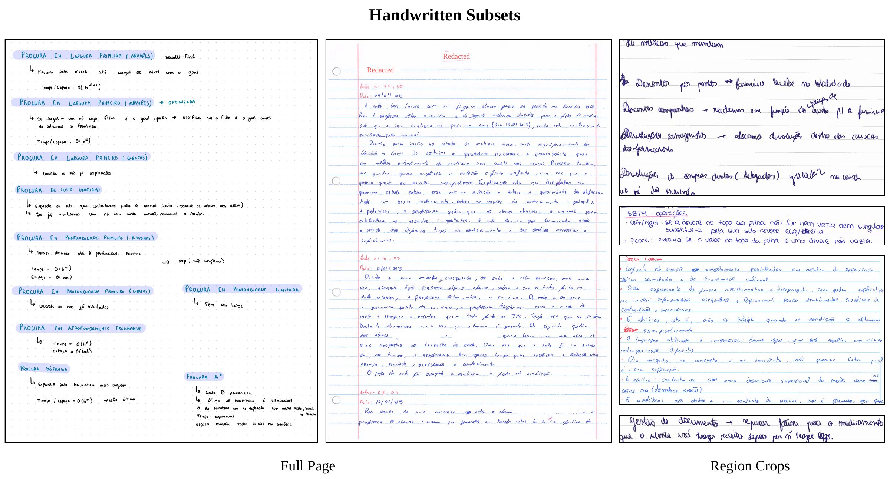
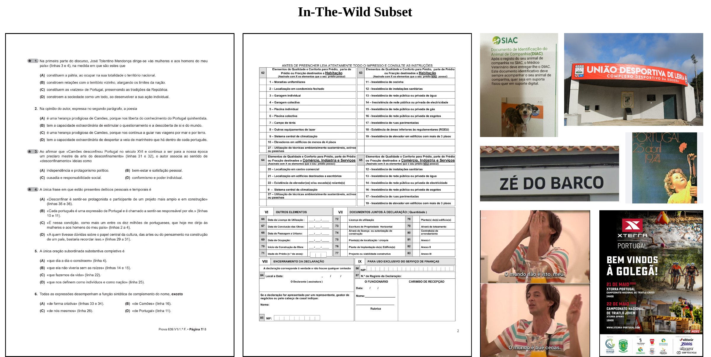
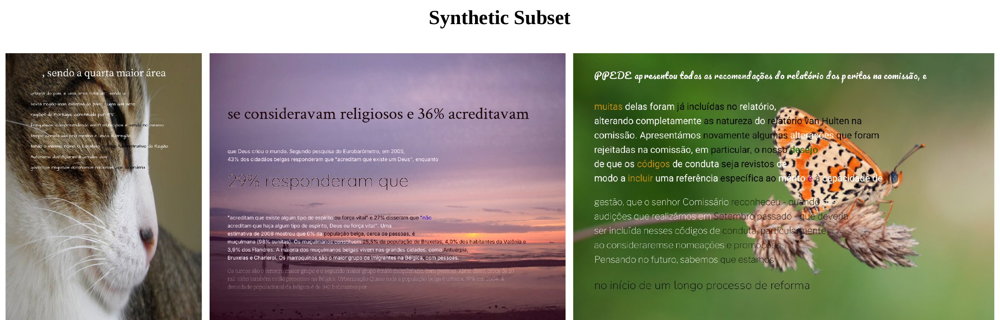
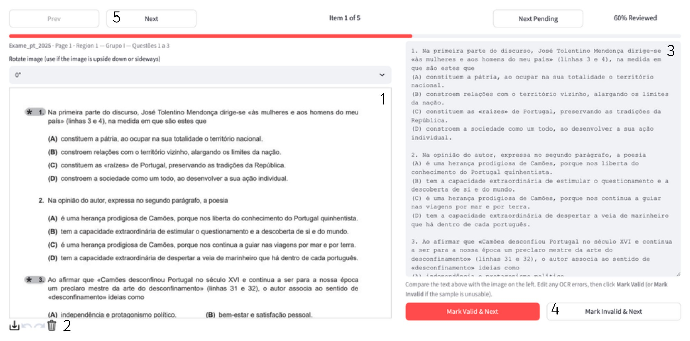
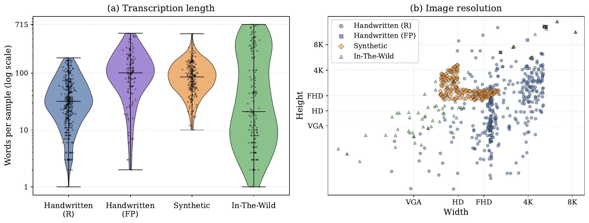
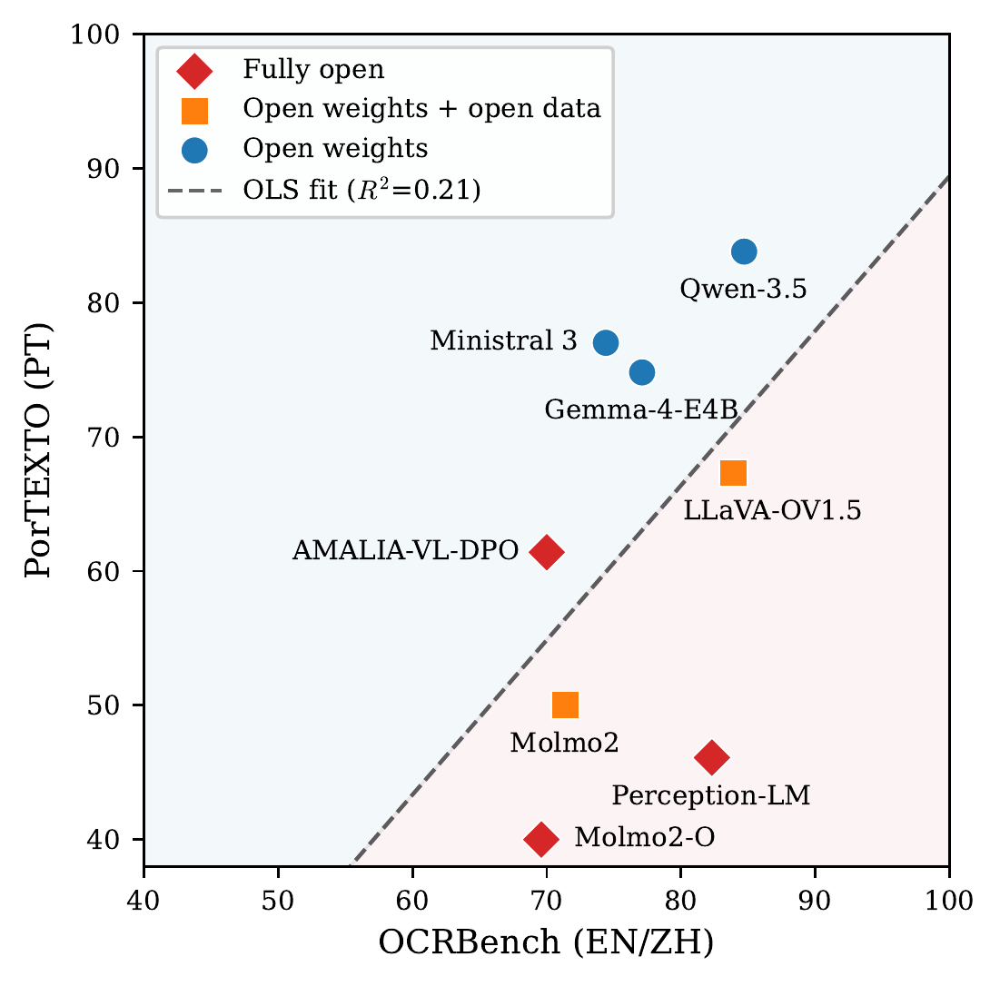
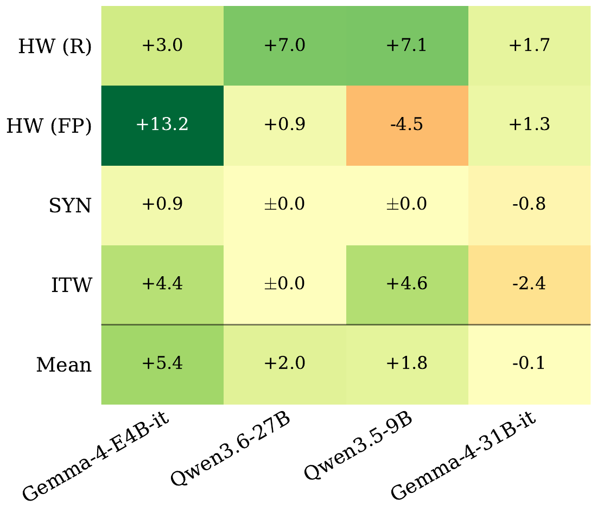

PorTEXTOA European Portuguese Benchmark for Visual Text Extraction
1 NOVA School of Science and Technology2 NOVA LINCS
Correspondence: jaca.pereira@campus.fct.unl.pt
Abstract
European Portuguese (pt-PT) is largely absent from Optical Character Recognition (OCR) benchmarks, which skew toward high-resource languages. The few benchmarks that cover pt-PT focus on historical artifacts and literature. This work addresses modern OCR applications, introducing PorTEXTO, the first benchmark for contemporary and culturally relevant pt-PT visual text extraction. To ascertain quality, we employ an annotation pipeline combining transcriptions from a frontier LVLM with exhaustive review by native speakers. We observe a sharp performance drop from synthetic to real world samples in most models, and find that, currently, specialized multilingual data is a better driver for pt-PT performance than model size or resolution budget, motivating the release of open pt-PT OCR resources.
Contemporary and Culturally Relevant Data
PorTEXTO covers the modern visual and linguistic contexts in which pt-PT text appears in practice, with samples from three complementary sources. Real-world data was collected through the voluntary effort of contributors and curated by native pt-PT speakers.

- Contentgrocery lists and personal notes to engineering and social sciences study notes
- CaptureA4 pages scanned at 200 dpi and rasterized to one high-resolution image per page
- Regionspages split into their main logical content blocks, in natural reading order

- Casualtown signs, building names, festivity posters, restaurant menus, memes
- Professionalexams, documents, government forms and invoices
- Conditionsvariable noise, lighting, perspectives and fonts, in both photographs and screenshots

- Textpt-PT Wikipedia and European Parliament transcripts
- RenderingSynthDoG layouts (slides, tables of contents, multi-section pages) over Open Images backgrounds
- Fontsdiverse open-source, Portuguese-compatible fonts, with colour adapted per word for contrast
Annotation Pipeline
Transcriptions from a frontier LVLM are exhaustively reviewed by native pt-PT speakers, before and after transcription.
Review & Clean
Reviewers discard unreadable samples and redact the regions they cannot read.
Transcribe
Gemini 3.1 Pro transcribes each image, preserving spatial layout.
Verify
A second reviewer validates, corrects, or discards each transcription.


Results
We evaluate 18 models with lmms-eval: 2 OCR-specific models, 13 first-tier LVLMs (up to 12B parameters) and 3 second-tier LVLMs (27B to 38B). Models keep their default configurations, with temperature 0 and thinking disabled. We report ANLS, which measures character-level similarity to the reference, and BLEU-1, which rewards correct words and is robust to different reading orders.
| Handwritten (R) | Handwritten (FP) | Synthetic | In-The-Wild | Mean | ||||||
|---|---|---|---|---|---|---|---|---|---|---|
| Model | ANLS | BLEU-1 | ANLS | BLEU-1 | ANLS | BLEU-1 | ANLS | BLEU-1 | ANLS | BLEU-1 |
| OCR-Specific | ||||||||||
| Nemotron-OCR-V2 | 15.6 | 9.6 | 11.2 | 9.5 | 91.4 | 81.0 | 75.9 | 68.8 | 48.5 | 42.2 |
| DeepSeek-OCR-2-3B | 36.1 | 30.2 | 18.7 | 23.3 | 91.4 | 84.3 | 84.1 | 75.0 | 57.6 | 53.2 |
| First-tier LVLMs (≤ 12B parameters) | ||||||||||
| Molmo2-O-7B | 26.1 | 22.1 | 6.6 | 10.7 | 70.7 | 61.5 | 56.7 | 34.8 | 40.0 | 32.3 |
| GLM-4.6V-Flash-10B | 46.5 | 34.3 | 21.8 | 19.3 | 56.8 | 54.1 | 48.3 | 45.5 | 43.4 | 38.3 |
| PerceptionLM-8B | 36.7 | 29.9 | 10.1 | 9.1 | 78.2 | 71.7 | 59.2 | 46.0 | 46.1 | 39.2 |
| Molmo2-8B | 35.0 | 26.8 | 12.4 | 14.3 | 81.5 | 66.6 | 70.9 | 44.0 | 50.0 | 37.9 |
| AMALIA-VL | 41.6 | 32.7 | 28.4 | 28.0 | 81.3 | 79.6 | 72.6 | 60.8 | 56.0 | 50.3 |
| InternVL3.5-8B | 51.6 | 43.6 | 31.8 | 34.0 | 75.5 | 71.6 | 81.0 | 71.7 | 60.0 | 55.2 |
| AMALIA-VL-DPO | 48.2 | 38.2 | 39.3 | 37.7 | 83.2 | 81.5 | 74.8 | 64.6 | 61.4 | 55.5 |
| Bee-RL-8B | 45.2 | 37.5 | 27.1 | 30.7 | 94.6 | 87.7 | 83.1 | 79.1 | 62.5 | 58.8 |
| Nemotron-Nano-12B-VL-V2 | 53.3 | 42.3 | 37.5 | 32.7 | 92.2 | 90.0 | 76.8 | 72.9 | 65.0 | 59.5 |
| LLaVA-OneVision-1.5-8B | 61.1 | 51.4 | 32.6 | 37.2 | 98.2 | 93.0 | 77.4 | 70.9 | 67.3 | 63.1 |
| Gemma-4-E4B-it | 78.2 | 63.7 | 42.7 | 38.7 | 95.6 | 89.1 | 82.7 | 78.5 | 74.8 | 67.5 |
| Ministral3-Instruct-8B | 74.0 | 59.9 | 63.9 | 56.8 | 98.6 | 96.1 | 71.4 | 58.9 | 77.0 | 67.9 |
| Qwen3.5-9B | 80.1 | 70.3 | 70.0 | 64.9 | 99.8 | 99.0 | 85.4 | 80.9 | 83.8 | 78.8 |
| Second-tier LVLMs (> 12B parameters) | ||||||||||
| InternVL3.5-38B | 56.5 | 47.7 | 42.6 | 43.2 | 81.2 | 76.8 | 75.2 | 68.2 | 63.9 | 59.0 |
| Gemma-4-31B-it | 88.0 | 79.0 | 65.2 | 58.8 | 98.3 | 93.0 | 89.8 | 87.0 | 85.3 | 79.5 |
| Qwen3.6-27B | 81.5 | 71.8 | 75.4 | 71.1 | 99.9 | 96.5 | 90.5 | 86.5 | 86.8 | 81.5 |
- Sharp drop from synthetic to real-world samples. 10 of the 18 models exceed 90 ANLS on Synthetic, but scores fall sharply on Handwritten and In-The-Wild. OCR-specific models collapse on handwriting (11.2 and 18.7 ANLS on full pages) while remaining competitive on In-The-Wild inputs.
- Model size and resolution budget are not the main bottleneck. Qwen3.5-9B leads the first tier with 83.8 mean ANLS, only 3 points behind the best second-tier model, Qwen3.6-27B (86.8). Gemma-4 models have the lowest resolution budget, yet reach the top-3 and top-2 scores in their tiers.
- Specialized multilingual data is the main differentiator. The top performing models are open weights and do not disclose their training data. The fully open Molmo2-O-7B (40.0) and PerceptionLM-8B (46.1) are among the weakest, below both OCR-specific models in mean BLEU-1. AMALIA-VL-DPO (61.4), trained with pt-PT data, is the best fully open model and on par with open data models.
EN/ZH OCR does not predict pt-PT OCR
Compared with OCRBench, which covers only English and Chinese, we find no discernible relationship with pt-PT scores (R² = 0.21). PerceptionLM-8B and LLaVA-OneVision-1.5-8B are competitive on OCRBench but trail in pt-PT, while AMALIA-VL-DPO has weak EN/ZH performance yet exceeds expectations in pt-PT.

Reasoning mostly helps
Enabling explicit reasoning raises mean ANLS for 3 of the 4 unified models, by up to +5.4 for Gemma-4-E4B-it. Gains on Handwritten (Region) are positive for all four models, but results are mixed on Handwritten (Full Page) and In-The-Wild.

Resources
- PorTEXTOdataset
- amalia-vl-evalevaluation code
- AMALIA-VLpt-PT vision and language model
BibTeX
@article{cardeira2026portexto,
title = {{PorTEXTO}: A European Portuguese Benchmark for Visual Text Extraction},
author = {Cardeira, Jo{\~a}o and Gl{\'o}ria-Silva, Diogo and Letras da Luz, Manuel and
Ferreira, Rafael and Tavares, Diogo and Semedo, David and Magalh{\~a}es, Jo{\~a}o},
journal = {arXiv preprint arXiv:2606.19096},
year = {2026}
}